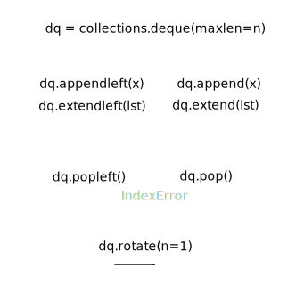

Basics
- True, False, and comparisons
- identity
- functions
- scope
- docstrings
- conditionals and loops
- ranges
- comprehensions
- input
- slicing
- shallow and deep copy
- lists
- tuples
- deques
- dicts
- sets
- itertools module
True, False, and comparisons
if () or [] or {} or None or 0 or '':
'this line is skipped'
From https://docs.python.org/3/library/stdtypes.html#truth-value-testing:
Considered false: instances with
__bool__()returning False or__len__()returning zero. Built-ins:
False,None- zeroes of any numeric type:
0,0.0,Decimal(0),Fraction(0, 1),0j- empty sequences and collections:
'',(),[],{},{},set(),range(0)
As in many languages, and and or are short-circuit operators, second argument is not evaluated here:
if False and whatever():
'this line is skipped, whatever() is not evaluated'
Comparison operators look quite standard: ==, != (<> was removed from the language), <, >, <=, >=. And for object identity: is, is not.
Behavior of the
isandis notoperators cannot be customized; also they can be applied to any two objects and never raise an exception.
Objects of different built-in types never compare equal (except different numeric types), e.g., '1' == 1 is false. <, >, <=, >= raise TypeError exception when the objects are of different types that cannot be compared.
>>> 'abc' > 1000
TypeError: unorderable types: str() > int()
x < y < z is equivalent to x < y and y < z, except y is evaluated only once. In both cases z is not evaluated at all when x < y is found to be false
Most importantly:
Use if x. Rarely if x == True and type(x) is bool when needed. Never if x is True, because bool is a subclass of int, this fails in obscure cases.
Same for not x and False.
An edge case is comparison to None. Use if x is None, never x == None. From PEP 8:
Comparisons to singletons like None should always be done with is or is not , never the equality operators.
Good:
if x:
...
if not x:
...
if x == True and type(x) is bool:
...
if x == False and type(x) is bool:
...
if x is None:
...
Bad:
if x is True:
...
if x is False:
...
if x == True:
...
if x == False:
...
if x == None:
...
There is a thing in python, operator chaining. It’s for things like x < y < z, which is roughly equivalent to x < y and y < z.
Except y is evaluated only once here.
Btw, in both cases z is not evaluated at all when x < y is false.
Be careful, with operator chaining, 1 == 1 in [1] is unreadable and it’s not obvios that it’s an operator chaining.
TODO: True + 1 == 2, False + 1 == 0
TODO: https://github.com/satwikkansal/wtfpython#-be-careful-with-chained-operations
TODO: http://canonical.org/~kragen/isinstance/ https://stackoverflow.com/questions/152580/whats-the-canonical-way-to-check-for-type-in-python
- q:
type(s) is strvstype(s) == strvsisinstance(s, str)– a: Virtually no difference betweenisand==here, but people tend to useis. Type comparison answers the strict question: is this a type of object.isinstance(o, cls)considers type hierarcy.
identity
functions
https://docs.python.org/3/tutorial/controlflow.html#more-on-defining-functions
http://effbot.org/zone/default-values.htm https://stackoverflow.com/questions/1132941/least-astonishment-and-the-mutable-default-argument https://stackoverflow.com/questions/291978/short-description-of-the-scoping-rules
https://docs.python.org/2/library/functions.html#apply Deprecated since version 2.3: Use function(*args, **keywords) instead of apply(function, args, keywords) (see Unpacking Argument Lists).
http://effbot.org/zone/default-values.htm#valid-uses-for-mutable-defaults
mutable (default) argument
This is a design flaw, explicitly documented here: https://docs.python.org/3/reference/compound_stmts.html#function-definitions
Default parameter values are evaluated from left to right when the function definition is executed. … This is generally not what was intended.
The same effect can be easily achieved using let over lambda:
def generate_f():
default_mutable_argument = []
def f(x, l = default_mutable_argument):
l.append(x)
return l
return f
f = generate_f()
Python docs recommend this construct:
def f(x, l = None):
if l is None:
l = []
l.append(x)
return l
Which can be enhanced slightly with type annotations for readability:
def f(x, l: [] = None):
...
And doesn’t mention this way at all:
def f(a, L = []):
L = copy(L) # or deepcopy(L), or L[:], depending on context
L.append(a)
return L
Which is surprising to me. Because in this trivial example it makes sense, but here’s another one:
def f(a, L = None):
if L is None:
L = []
L.append(a)
return sum(L)/a
Here it really shouldn’t modify the argument, but the mistake is obscure and can’t be recognized. TODO: a good real world example
In ruby it copies the default argument on every call and no puppy was harmed because of this.
lambda
No return statement in lambdas: https://docs.python.org/3/reference/expressions.html#lambda
https://stackoverflow.com/questions/862412/is-it-possible-to-have-multiple-statements-in-a-python-lambda-expression
just use a tuple: lambda x: ( f(x), g(x) )
scope
Closures are good, for example, to have global scope clean, to replace hard-coded constants.
Python doesn’t have open free variables: http://effbot.org/zone/closure.htm
def outer(msg):
def inner():
print(msg)
return inner
i = outer('hell')
i() # prints 'hell'
def closure():
count = 0
def inner():
nonlocal count
count += 1
print(count)
return inner
i = clojure()
i() # prints 1
i() # prints 2
i() # prints 3
If you don’t declare a var global, a new local one is created:
x = 0
def f():
x = 1
print(x)
f() # 1
x # 0
Global actually means module scope.
TODO: What is a closure?
LEGB rule: https://stackoverflow.com/questions/291978/short-description-of-the-scoping-rules/292502#292502
Instance and class variables can only be accessed by explicitly providing the namespace:
class Foo():
x = 0
def foo(self):
self.__class__.x = 1
self.x = 10
ff = Foo()
ff.x == 0
ff.foo()
ff.x == 10
Foo.x == 1
The scope of names defined in a class block is limited to the class block; it does not extend to the code blocks of methods -– this includes comprehensions and generator expressions since they are implemented using a function scope:
class Foo:
x = 0
def f(self):
print(x)
Foo().f() # NameError: name 'x' is not defined
class Foo:
x = 0
y = [x for _ in range(3)] # NameError: name 'x' is not defined
docstrings
PEP 257 – Docstring Conventions: https://www.python.org/dev/peps/pep-0257/
https://stackoverflow.com/questions/3898572/what-is-the-standard-python-docstring-format
conditionals and loops
if False:
whatever()
else:
print('ok')
switch/case pep-3103
{
'a': 1,
'b': 2,
'c': 3,
}.get(x, 0)
these do not support fall through, and this can be good or bad, depends on the point of view and problems you solve
range() used to be xrange() in python 2
for n in range(0,100000000):
pass
int i = 0
while i < 100000000:
i += 1
i = 100
for i in range(3):
pass
print(i) # prints 2
i = 100
for i in []:
pass
print(i) # prints 100
ranges
https://stackoverflow.com/questions/35004162/why-is-range0-range2-2-2-true-in-python-3
comprehensions
[(x,y) for x in range(2) for y in range(3)]
input
input() used to be raw_input() in python 2: http://www.diveintopython3.net/porting-code-to-python-3-with-2to3.html#raw_input
int( input().strip() )
while True:
try:
i = int(input('i: '))
break
except:
pass
print(i)
slicing
a = [0, 1, 2, 3, 4, 5, 6, 7]
b = ['a', 'b', 'c', 'd', 'e', 'f', 'g', 'h']
a[::2] = b[::2]
a == ['a', 1, 'c', 3, 'e', 5, 'g', 7]
Extended slices can’t be used for assigning a list of different length: https://docs.python.org/2.3/whatsnew/section-slices.html
shallow and deep copy
http://www.python-course.eu/deep_copy.php
q: What are shallow copy and deep copy? — When you do a = [1, 2, 3]; b = a, you bind both variables to a list object. Now, if you operate on a and modify it, you modify the object, so you’ll see changes through the b variable. If the list is flat, you can create a shallow copy, so different vars are bound to different list objects. But if a list contains other lists, a shallow copy is not enough, you need to create a deep copy. The same can be said about other mutable containers like dicts and sets.
q: Get a deep copy of a list, dict, set, deque. — a: copy.deepcopy(thing)
q: What does l = lst[:] mean? — a: Creates a shallow copy of entire list.
lists
lst = []
lst += 'a'
lst += ['b']
lst.append(['c'])
lst.insert(0, '0')
lst == ['0', 'a', 'b', ['c']]
lst == [3, 1, 2]
sorted(lst)
lst.sort() returns None, here is why: https://mail.python.org/pipermail/python-dev/2003-October/038855.html
pre-allocating a list benchmark: http://stackoverflow.com/questions/22225666/pre-allocating-a-list-of-none
lst.index(e) raises ValueError when e is not in the list, because a value like -1 could lead to obscure bugs
tuples
deques
https://dbader.org/blog/queues-in-python

dicts
https://docs.python.org/3/library/stdtypes.html#typesmapping
interesting thing: d[k] raises ValueError when the k is not in the dict, while d[k] = 'whatever' sets the new value
d = {}
d[1] # raises ValueError
d[1] = 'whatever' # sets the value
interesting: Due to the way the Python C-level APIs developed, a lot of built-in functions and methods don’t actually have names for their arguments. .get(x, default=0) throws TypeError: get() takes no keyword arguments, but .get(x, 0) works
How (not) to merge dictionaries: http://treyhunner.com/2016/02/how-to-merge-dictionaries-in-python/, https://stackoverflow.com/questions/38987/how-to-merge-two-dictionaries-in-a-single-expression/26853961#26853961
TODO: iteritems, iterkeys, itervalues are no longer supported
TODO: how dicts are implemented: https://stackoverflow.com/questions/327311/how-are-pythons-built-in-dictionaries-implemented/44509302#44509302, https://mail.python.org/pipermail/python-dev/2012-December/123028.html
Why lists can’t be keys in a dict: https://wiki.python.org/moin/DictionaryKeys
https://stackoverflow.com/questions/2799064/how-do-i-merge-dictionaries-together-in-python https://stackoverflow.com/questions/38987/how-to-merge-two-dictionaries-in-a-single-expression
Dicts preserve order of insertion in python 3.7 and newer. https://www.python.org/dev/peps/pep-0468/#motivation
https://github.com/mewwts/addict
setdefault and defaultdict
Good examples of .setdefault() http://xwell.org/2015/04/07/python-tricks-setdefault/:
incident = {}
incident.setdefault('action', {}).setdefault('hacking', {}).setdefault('variety', []).append("Brute force") # => {'action': {'hacking': {'variety': ['Brute force']}}}
https://github.com/mewwts/addict: for working with dicts js-style:
mapping = addict.Dict()
mapping.a.b.c.d.e = 2
mapping == {'a': {'b': {'c': {'d': {'e': 2}}}}}
https://code.activestate.com/recipes/66516-add-an-entry-to-a-dictionary-unless-the-entry-is-a/:
setdefault is normally not useful if the values are immutable setdefault is particularly useful for the very common data structure that is a dictionary whose values are lists, and the single most typical usage form for it is somedict.setdefault(somekey,[]).append(somevalue).
http://python.net/~goodger/projects/pycon/2007/idiomatic/handout.html:
The only problem with dict.setdefault() is that the default value is always evaluated, whether needed or not. That only matters if the default value is expensive to compute.
http://python.net/~goodger/projects/pycon/2007/idiomatic/handout.html:
You cannot get KeyError exceptions from properly initialized defaultdict instances. You have to use a “key in dict” conditional if you need to check for the existence of a specific key.
OrderedDict
https://www.reddit.com/r/Python/comments/7jyluw/dict_knownordered_versus_ordereddict_an/
https://docs.python.org/3/library/collections.html#collections.OrderedDict
TODO: performance comparison dict vs collections.OrderedDict
sets
isdisjoint is faster than s & t, because it does short-circuit: https://stackoverflow.com/questions/45112928/python-isdisjoint-runtime
itertools module
https://more-itertools.readthedocs.io/en/latest/
lst = [('USA', 'LA'), ('Russia', 'Moscow'), ('USA', 'NY'), ('Russia', 'St. Petersburg'), ('England', 'London')]
[(k, list(g))
for k, g in
itertools.groupby( sorted(lst), key = lambda x: x[0] )]
## [('England', [('England', 'London')]), ('Russia', [('Russia', 'Moscow'), ('Russia', 'St. Petersburg')]), ('USA', [('USA', 'LA'), ('USA', 'NY')])]
[(k, [j for i,j in g])
for k, g in
itertools.groupby( sorted(lst), key = lambda x: x[0] )]
## [('England', ['London']), ('Russia', ['Moscow', 'St. Petersburg']), ('USA', ['LA', 'NY'])]
TODO: how to get prev and next values in a loop if you don’t have to look too smart:
l = len(timestamps)
for i in range(l):
if i < l-1:
result.append(timestamps[i])
result.append( (timestamps[i] + timestamps[i+1]) / 2 )
else:
result.append(timestamps[i])
q: divide a string into groups of repeated consecutive elements, e.g., 'AAAABBBCCDAA' into ['AAAA', 'BBB', 'CC', 'D', 'AA'] — a: [''.join(list(g)) for k, g in itertools.groupby('AAAABBBCCDAA')]
q: group elements of a list by some key, e.g., [..., ('Russia', 'Moscow'), ..., ('Russia', 'St. Petersburg'), ...] into [..., ('Russia', ['Moscow', 'St. Petersburg']), ...]— a: [(k, [j for i,j in g]) for k, g in itertools.groupby(sorted(lst), lambda x: x[0])]
q: get an iterator, which is similar to reduce, but returns an intermediate results — a: itertools.accumulate(lst, operator.mul)
q: how to iterate over multiple lists, one after another, without concatenating — a: itertools.chain( [1, 2, 3], [4, 5, 6] )
q: itertools.chain() vs itertools.chain.from_iterable() — a: the latter gets lazily iterates over input, which can be infinite sequence
q: get rid of head of a list before a predicate becomes false — a: list(itertools.dropwhile(lambda x: x<3, [1, 2, 3, 1, 2, 3])) == [3, 1, 2, 3]
q: get rid of tail of a list after a predicate becomes false — a: list(itertools.takewhile(lambda x: x<3, [1, 2, 3, 1, 2, 3])) == [1, 2]
q: slice() vs itertools.islice() — a: the latter is for iterators, which don’t support indexing, consumes data on them; in most cases just use the former
q: map() vs itertools.starmap() — a: the latter is for data, which has been pre-zipped, list( itertools.starmap(pow, [(5,2), (3,2), (10,3)]) ) == [25, 9, 1000]
q: zip() two sequences until the longest one is exhauseted, with a given value for missing bits — a: itertools.zip_longest(*iterables, fillvalue=None)
q: zip() vs itertools.zip_longest() — a: the former stops when the shortest iterator is exhausted, the latter stops when the longest one is done